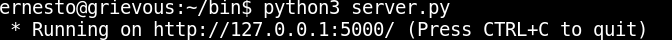

Desarrollar un API con GraphQL en Flask
Posted on Sun 25 June 2017 in Tutorial de Python • 2 min read
Continuando con los artículos sobre Flask, donde el último artículo fue de como crear un API Restful con Flask y MongoDB .
En este artículo se toca el uso de GraphQL para crear un API. GraphQL es un lenguaje de consulta de datos desarrollado por Facebook, es una alternativa a Rest (más información en wikipedia).
La librería para Flask de GraphQL lo pueden ver en el siguiente enlace. El artículo explicará el ejemplo que aparece en la página oficial de graphQL para Flask .
Instalación:
#pip3 install flask graphene flask-graphql
Script servidor (server.py):
#!/usr/bin/env python3
#Se importa flask, graphene y graphql.
from flask import Flask
from graphene import ObjectType, String, Schema
from flask_graphql import GraphQLView
#Se crea la clase Query que hereda de graphene ObjectType.
class Query(ObjectType):
#Se define la descripcion
hello = String(description='Hello')
#Se define la funcion resolve_hello, se le pasa args, context e info.
def resolve_hello(self, args, context, info):
return 'World'
#Se define la funcion de la vista.
#que se le pasa el esquema con la clase Query.
view_func = GraphQLView.as_view('graphql', schema=Schema(query=Query))
#Se crea la app como instancia de la clase Flask.
app = Flask(__name__)
#Se define el url donde se le pasa la funcion de la vista
app.add_url_rule('/', view_func=view_func)
if __name__ == '__main__':
#Se ejecuta flask.
app.run()
Al ejecutar el script:

Se consulta usando curl:
curl -H 'Content-type: application/graphql' -d '{hello}' http://localhost:5000/
Y este devuelve:
{"data":{"hello":"World"}}
Desde un script en python:
Instalación de librerías necesarias:
#pip3 install gql requests
El script cliente.py:
#!/usr/bin/env python3
#Se importa json
import json
#se importa ggl
from gql import gql, Client
from gql.transport.requests import RequestsHTTPTransport
#Se define el transport, se conecta el cliente.
transport = RequestsHTTPTransport('http://localhost:5000/')
client = Client(transport=transport)
#Se realiza una consulta buscando la variable hello
response = client.execute(gql('{hello}'))
#muestra en pantalla la respuesta como un json.
print(json.dumps(response))
Se ejecuta el script:
python3 cliente.py
{"hello": "World"}
En un artículo en genbetadev comparan API Restful con GraphQL y por que es necesario dejar de usar API Restful. En futuros artículos se ampliará el uso de GraphQL.
¡Haz tu donativo! Si te gustó el artículo puedes realizar un donativo con Bitcoin (BTC) usando la billetera digital de tu preferencia a la siguiente dirección: 17MtNybhdkA9GV3UNS6BTwPcuhjXoPrSzV
O Escaneando el código QR desde la billetera: